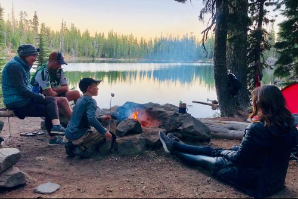

Relive the Outdoor, Experience the Boonfire Tokoro!
Do you wish your active family to go glamping? A holiday getaway to satisfy your adventure is just right here with a click of your finger. The BoonFire Tokoro is one of the most pleasant and visited home campsites in Preston. Boonfire Tokoro is open 24/7, 365 days a year. It’s the beating heart of Preston, where visitors are never-ending. Let’s go off camping! Whether you are still in your fancy dream, satisfy your staycation in options Boonfire Tokoro can offer. You can book online for campsites, holiday parks, and glamping accommodation on Dabestka.com.
Explore the wonder of Preston around several slick options on deciding your camping destination. Sift through various glamorous campsites right through the summit of Kanami hills. Witness the explosion of sunrise on the eastside, view the sacred rainforest on the north, and experience paragliding as well as the best beach break you will ever have on the south. The southwest offers a pristine waterfall and rafting. You can secure a spot for a tent along the banks of the Bongga-bongga river that run towards the Anopa beach. Surprise your fantasy at the glamorous camping sites for your outdoor experience.
The Boonfire Tokoro campsite is an ideal place for holiday parks with rent-a-tent options of the most sought-after destinations near you. Whether you wish to buzz for a beach break, a cycling holiday, or family bonding and hiking adventures, you can book camping online at Dabestlablab.com in just a few clicks.
Do you think of wandering to the place under the radar? Preston glamping site by land or cruising just a few kilometers south of the outskirts offers the gateway to paradise, where you can experience the true wonderland. And if you are not sure where to go, glance at Dabestka.com for references on Boonfire Tokoro activities and a weather guide to the latest Klimagator website. Experience the exclusive concepts of glamping under the canopy of diverse shades of weeping trees such as the birch and some cherry trees, Crabapple, and flowering dogwood. The camping areas are all corralled to protect the wild animals bother campers, and delimit campers to distract the wild. You can also seek a spot based on nearby leisure opportunities for swimming, sailing, kayaking, cycling, and rock climbing.
Boonfire Tokoro is, essentially, an all-time available campsite. Choose your destination anytime, plug in the dates of your holiday, and you’ll access all the places with space. You think you might wish to chop and change at the last minute; you can choose the whatsavailablecamp online desk to adjust and fulfill your dreams. Experience the Tipi, Yurts, Wigwam, pods, huts, and caravan at your preference.